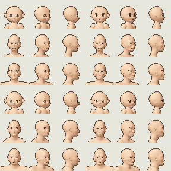
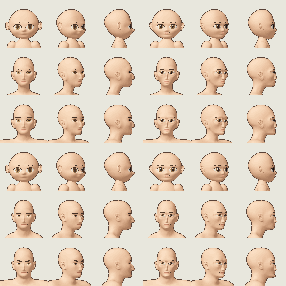
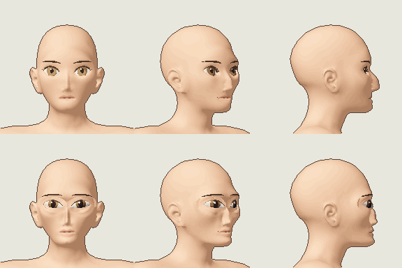
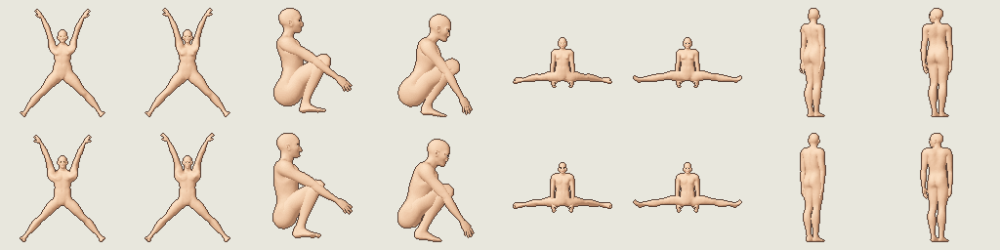
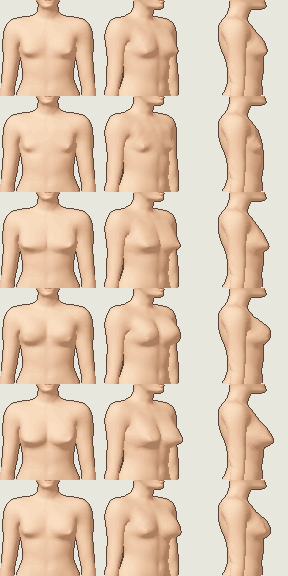

Zotero · 컬렉션과 태그
분류와 개별 자료를 따로 탐색한다.컬렉션은 작업 단위를 묶고 태그는 여러 분야에 걸쳐 자료를 찾게 한다. 연구실에서도 화면 이동과 주제 선택을 독립시켰다.
좌측에서 자료·원문·보고서·계획표를 고른다. 가운데에는 같은 회차의 여러 분야를 한 번에 선택해 합친 결과를 남기고, 오른쪽은 계속 읽는 자리에 쓴다. 회차를 바꿔도 이전 판은 그대로 열린다.
원전 열기정범님이 선호한 ‘나’를 작은 등신의 출발점으로 삼았다. 5~8등신에서는 눈꺼풀과 안구의 접촉선, 콧등 앞에서 가려지는 먼 눈, 아랫입술과 턱 사이 홈을 점검했다. 45도에서 홍채가 눈 밖으로 뜨던 구조를 바꾸고 눈썹뼈·미간·볼 위의 깊이를 조정했다.



옆얼굴의 눈 노출과 콧대·입술이 끊기는 위치는 전보다 읽기 쉽다. 48px에서 눈꼬리와 입매만으로 서로 다른 인상을 구별하기는 아직 어렵다. 눈 바깥쪽과 볼의 접합 그림자도 큰 도판에서 다시 확인할 부분이다.
두 캡처를 양팔 벌림 155°, 양쪽 고관절 벌림 42°로 근사했다. 공중에서 벌린 다리와 바닥을 딛는 자세는 발목·무릎 방향이 다르므로 각각 불러올 수 있다. 양팔을 들 때는 위팔 회전에 어깨띠 회전을 더하고, 겨드랑이 앞주름과 옆가슴 사이에 국소 보정을 적용했다. 고관절 벌림, 굽힌 무릎 앞과 팔꿈치 뒤쪽에도 국소 부피 보정을 적용했다. 공중 X를 192px로 재현했을 때 기존 판은 가장 높은 손끝이 위로 약 19~20px 잘렸다. 공통 화면 맞춤을 적용하면 두 성별 모두 위쪽 여백이 약 11px 생긴다.
캡처 자세에서 관찰 시작
중립과 극단을 포함한 16개 자세 표본에서 개별 관절 각도를 바꿀 수 있다. 어깨띠도 양쪽을 독립적으로 올리거나 앞으로 가져올 수 있다. 어깨·고관절의 두 굽힘 축은 회전 범위를 공유하고, 무릎을 펼수록 축 회전이 줄어든다. 훈련 범위는 사례 재현을 위한 별도 설정이다. 무릎과 몸통의 접촉, 발의 바닥 고정, 균형 이동까지 자동으로 풀지는 않는다. 늘어남·눌림 표시는 중립 대비 삼각형 변 길이를 비교한다.
5~8등신에서 크기, 밑면 너비, 윗부분 충만도, 하부 무게 중심, 좌우 간격, 좌우 차이를 따로 조정한다. 측면 돌출을 넓은 곡면에 분산했다. 양쪽 조직은 따로 감쇠하며 부피에 따라 반응 속도가 달라진다. 한쪽 어깨의 자극, 정점에서 일시정지, 초기화 후 정지 형태를 대조할 수 있다. 회전 드래그는 카메라만 움직이므로 같은 자세와 조명에서 실루엣을 대조할 수 있다.
가슴 형태·움직임 검사 열기 · 전신 비율 바꾸기
만화 비율은 어깨·흉곽·허리·골반, 허벅지·종아리·팔 길이, 손·발 크기, 얼굴 너비를 개별 설정한다. 남성의 별도 근육형은 이후 체형 회차에서 다룬다.
Zotero의 컬렉션과 태그, PubMed의 검색 필터와 결과 요약, Google Drive의 검색 칩을 대조했다. 프로젝트 자료실에는 분야별 건수를 노출하고 여러 분야를 동시에 선택하게 했다. 자료를 골라도 목록은 남고, 한 자료를 고정한 채 다른 자료를 나란히 비교할 수 있다. 회차, 원문 묶음, 관찰창의 선택들은 버튼으로 노출한다.
개편한 자료실 열기각 자료에 한 줄 요약, 단원 요약, 상세 적용을 담았다. 외부 사진과 작화 도판은 원전에서 열람할 수 있다. 이 페이지의 인체 이미지는 자체 렌더이며 기반 인체 메시와 리깅 자료의 권리 표기는 기존 연구실 자산에 수록했다.
컬렉션은 작업 단위를 묶고 태그는 여러 분야에 걸쳐 자료를 찾게 한다. 연구실에서도 화면 이동과 주제 선택을 독립시켰다.
좌측에서 자료·원문·보고서·계획표를 고른다. 가운데에는 같은 회차의 여러 분야를 한 번에 선택해 합친 결과를 남기고, 오른쪽은 계속 읽는 자리에 쓴다. 회차를 바꿔도 이전 판은 그대로 열린다.
원전 열기결과 목록의 제목만으로는 원문을 열지 결정하기 어렵다. 조건, 결과 수, 핵심 문장을 목록에 함께 보이게 했다.
분야별 건수와 선택 상태를 노출했다. 결과에 한 줄 요약을 넣고 본문에는 출처·한 단원·상세 설명을 둔다. ‘조건 지우기’는 한 번에 검색과 분야를 초기화한다.
원전 열기사용자가 폴더를 차례대로 통과할 필요 없이 검색과 조건을 자유롭게 조합하게 하는 방식을 참고했다.
분야 버튼을 여러 개 바로 켜고 끌 수 있다. 저장 자료만 보거나 한 자료를 비교 기준으로 고정할 수 있고, 링크는 검색·선택 상태까지 복원한다. 이 세 플랫폼에 대한 사용자 선호 순위는 측정하지 않았다.
원전 열기한 사람을 정면에서 사선·양측면까지 본 저자 공개 도판은 조명이나 표정 변화와 시점 차이를 분리하는 대조 기준이다.
저자 공개본 그림 8의 동일 인물 15개 카메라 시점을 대조 기준으로 삼았다. 45도에서 홍채만 좁히면 눈이 따로 떠 보일 수 있다. 외안각·콧등·광대의 앞뒤 관계를 바꾼 같은 3D 표면을 돌려서 검사한다. 사진의 이용 조건은 원문에 따르며 배포 도판은 자체 렌더다.
원전 열기눈확의 사방 경계, 위·아래 눈꺼풀 단면, 홍채가 각막 뒤에서 보이는 인상을 관찰했다.
이전 5~8등신의 흰자·홍채·동공은 따로 돌출된 부품이었다. 새 판은 각막 한 표면에 색을 배치하고 양 눈구석에서 이어지는 닫힌 눈꺼풀 주변 피부를 구성했다. 48px의 눈매와 입매는 여전히 선호 검토 대상이다.
원전 열기정면에 보이는 큰 눈을 그대로 옆에 붙이는 방식은 옆눈의 형태를 설명하지 못한다. 사선에서 먼 눈의 외곽을 살폈다.
나 시안의 각막·입술·턱을 작은 등신의 출발점으로 삼았다. 2·3등신의 얼굴 아래쪽은 짧게, 머리는 넓게 조정했다. 5~8등신에는 새로운 안와 단면과 눈꺼풀을 적용했다.
원전 열기콧등의 위·옆과 코 바닥은 보는 각도에 따라 가려지는 순서가 다르다. 점으로 그린 정면 코에도 같은 입체가 필요하다.
기존 코끝의 과한 앞돌출을 낮추고 미간을 약간 넣었다. 광대의 앞면과 턱끝, 입술 바로 아래 홈도 같은 메시에서 조정한다. 측면에서 코·입술·턱을 따로 비교한다.
원전 열기머리 단면과 눈·코·입 기준선의 방향을 45도와 측면에서 대조했다.
정면에서만 읽히는 검은 눈 선을 피하고 관자놀이 쪽으로 눈꺼풀이 후퇴하게 했다. 정면·45도·측면을 48·96px에서 같은 배율로 남긴다.
원전 열기앞으로 나온 윗입술, 아랫입술의 볼륨, 턱 앞의 접힘을 따로 관찰했다.
입매가 사라지는 작은 출력에서 턱 전체를 밀어내지 않도록 입 주위와 턱끝의 깊이를 독립적으로 바꿨다. 48px에서 두 입술이 언제 한 픽셀 줄로 합쳐지는지 다시 본다.
원전 열기세 운동면에서 여러 관절의 3차원 운동이 관찰됐다. 한 고정점에서 팔 전체를 돌리면 겨드랑이와 윗가슴 표면이 함께 말려 올라가기 쉽다.
위팔의 국소 회전과 안쪽 어깨띠 중심의 회전을 나눠 누적하고 원래 쇄골 가중치를 연결했다. 정확한 개인 견갑 궤적은 단순화했다. 캡처를 근사한 양팔 벌림 155°·고관절 벌림 42°에서 확인한다.
원전 열기굽힘·폄과 좌우 벌림·회전을 같은 한계로 넣지 않는다. 일반 사용 범위와 훈련자가 쓰는 큰 범위를 구분했다.
이 관찰창의 각도는 모델의 중립 자세에 대한 제작 범위다. 무릎 회전은 굽힌 정도에 따라 허용량이 늘고, 어깨를 들었다고 팔의 비틀림까지 잠기지 않게 했다.
원전 열기무용수의 극단 자세는 일반 가동 범위와 구분해 검토해야 한다. 큰 고관절 각도를 모든 사람의 표준값으로 옮기지 않았다.
훈련 범위에서 옆으로 벌리기·앞뒤 찢기·옆차기를 별도 시험한다. 골반 기울임과 흉곽 회전도 따로 조작한다. 모델은 뼈 충돌, 바닥 반력과 개인의 통증을 계산하지 않는다.
원전 열기누운 자세와 선 자세의 실측에서 유방 표면 여러 부위가 같은 거리만큼 움직이지 않는다.
성인 여성 원형의 좌우 조직 가중치를 사용하고 주변으로 완만하게 분산했다. 밑면 너비, 상부 충만도, 돌출과 하부 중심을 나눠 한 꼭짓점만 뾰족해지는 현상을 줄인다. 탄성은 검사 가능한 감쇠 모형으로 단순화했다.
원전 열기옆면과 형식별 도판, 흉근과 조직 경계 도해를 대조했다. 같은 크기라도 폭과 상부·하부의 분포에 따라 실루엣이 달라진다.
성인 여성 5~8등신에서 여섯 기본 조합과 여섯 조절축을 제공한다. 같은 회전·같은 조명에서 중립과 움직인 직후, 진동이 가라앉은 뒤를 비교한다.
원전 열기가슴 표면 어느 한 지점의 변형량을 전 영역에 균일하게 대입하기 어렵다는 근거로 사용했다.
상완이 움직일 때 흉곽 중심은 보존하고 연부조직에는 감쇠 변위를 적용한다. 연구의 실측 수치를 개인별 탄성 상수로 추정하지 않았다.
원전 열기공식 캐릭터 표현은 구조의 참고로만 쓰고 몸통·팔다리의 비례를 독립 조정한다.
어깨·흉곽·허리·골반·상하 다리 길이·팔·손·발·얼굴 너비를 조절한다. 캐릭터 이미지나 의상은 가져오지 않는다. 남성 근육형의 별도 근육질 조형은 후속 체형 회차에 둔다.
원전 열기